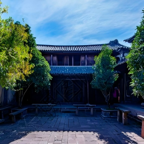
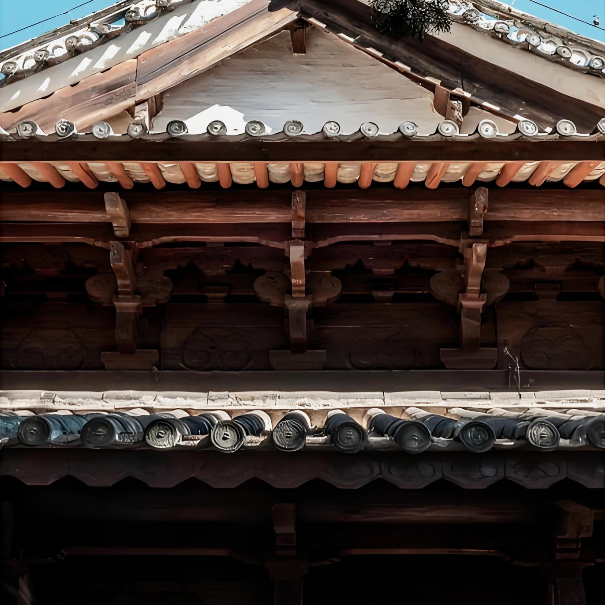
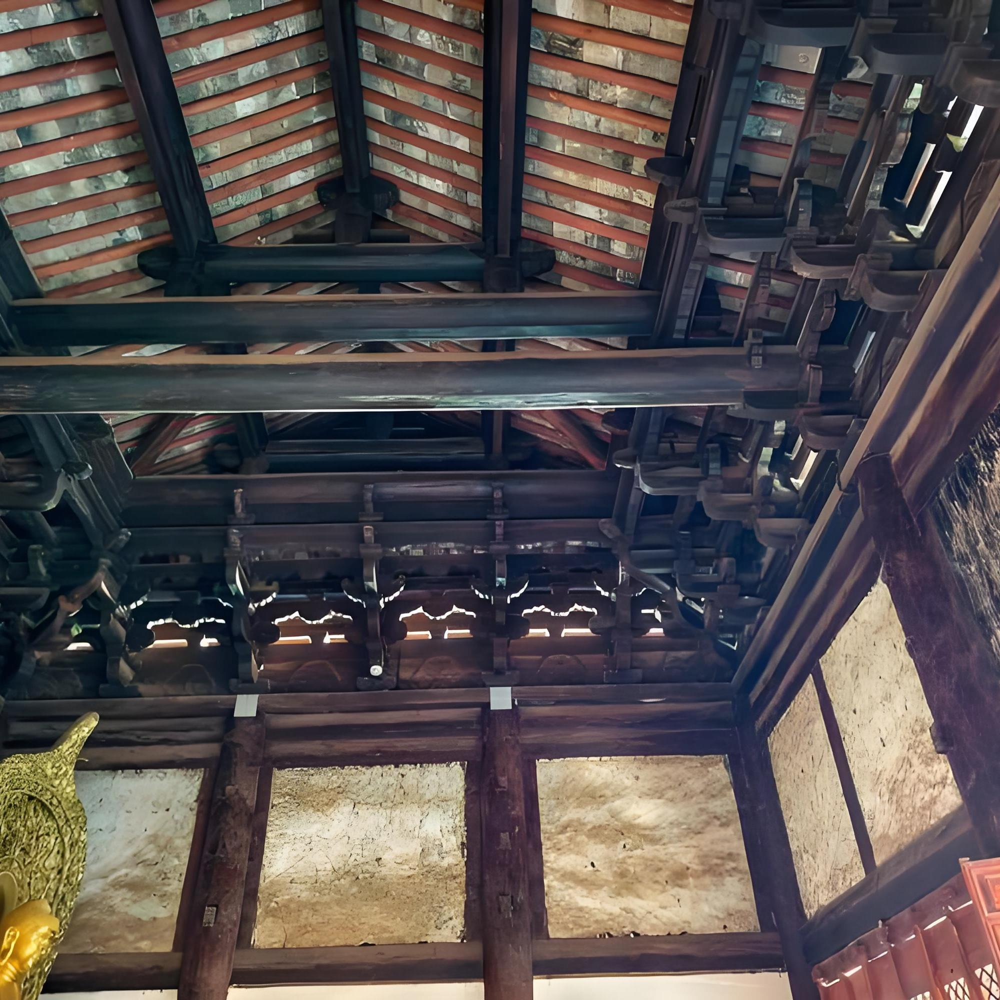
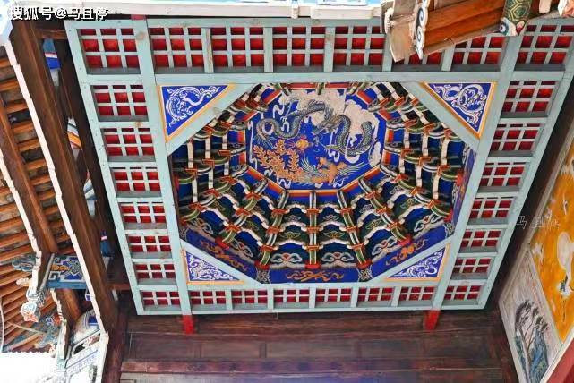

⏳ 正在加载飞檐3D模型...
兴教寺大殿飞檐

赵家大院院墙瓦檐
飞檐弧度经过精准测算，既让建筑看起来轻盈灵动，又能避免雨水侵蚀木构，延长建筑寿命。兴教寺大殿飞檐、赵家大院院墙瓦檐都采用了同款弧度设计，只是适配了不同的建筑功能需求。
⏳ 正在加载榫卯3D模型...

兴教寺梁柱榫卯

赵家大院门窗榫卯
古人用榫卯把木头“拼”成建筑，地震时还能轻微“晃一晃”卸力，两百年都不散架，比钉子还靠谱。大到兴教寺的殿宇梁柱，小到赵家大院的门窗构件，都靠这招“锁死”结构。
⏳ 正在加载藻井3D模型...

兴教寺诵经殿藻井（简约版）
藻井不只是好看的装饰，更是古人的“声学黑科技”，站在戏台中央说话，不用麦克风也能传遍四方街。兴教寺诵经殿的藻井虽然更素雅，但声学原理与古戏台完全一致，让诵经声清晰庄严，不用大声喊也能传遍殿内。